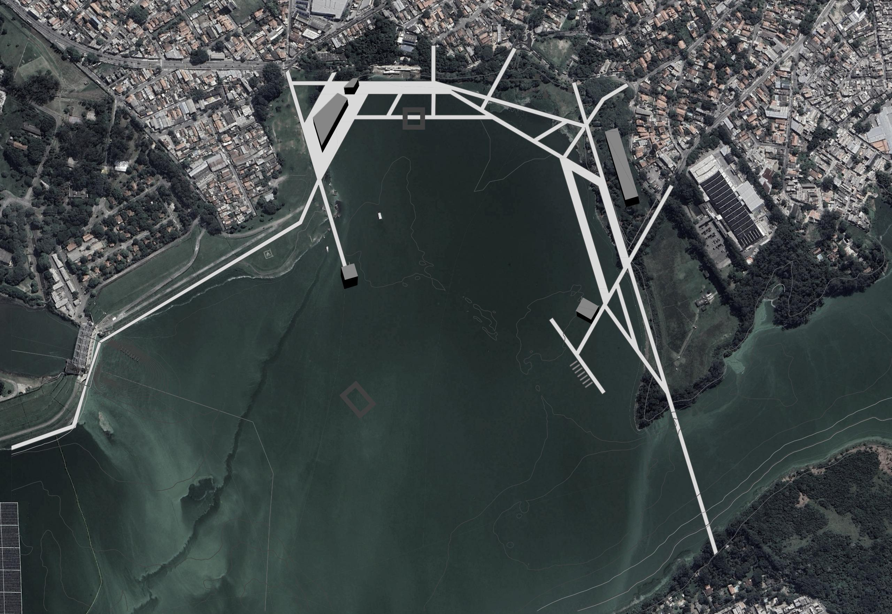
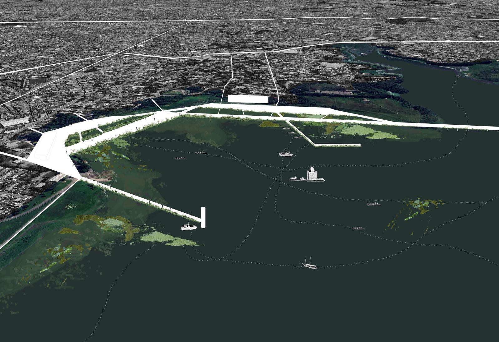
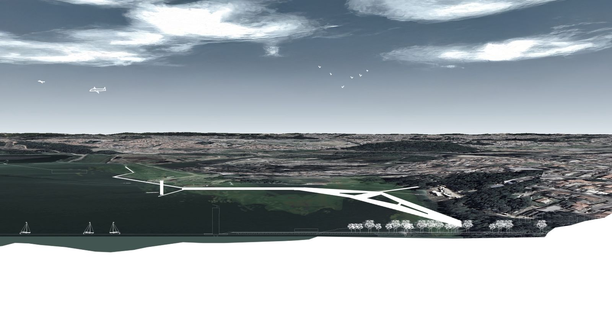
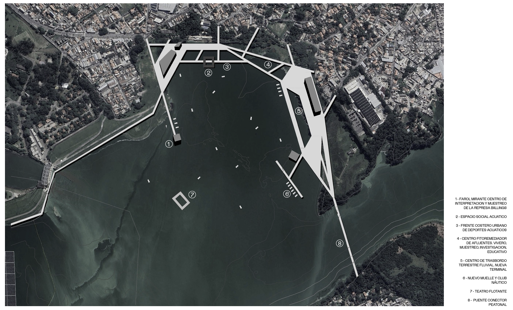

19° Semana internacional
A 19ª Semana Internacional da Escola da Cidade teve como tema “Campo das Águas | Espaços Públicos nas Planícies Fluviais”, trazendo a discussão sobre como pensar a cidade a partir de seus rios, represas e várzeas. O encontro reuniu professores, pesquisadores e estudantes de diferentes países em torno de reflexões sobre paisagem, urbanismo e novas formas de apropriação dos territórios ligados à água.
Dentro desse contexto, nosso grupo desenvolveu uma proposta situada na Represa Billings, um espaço fundamental para São Paulo, mas historicamente negligenciado em seu potencial de lazer, convívio e cultura. Inspirados no conceito de um SESC aberto, pensamos em criar um percurso que permitisse reaproximar a população da represa e transformá-la em um lugar vivo, coletivo e acessível.
O projeto partiu da ideia de estabelecer caminhos sobre a água, conectando pontos da represa e possibilitando a experimentação do espaço de forma direta. Esses trajetos não são apenas circulações, mas infraestruturas que abrem espaço para atividades diversas: esportivas, culturais, educativas ou simplesmente de contemplação. Ao longo deles, propusemos equipamentos distribuídos, capazes de ativar diferentes usos e de estimular a permanência.

Com isso, buscamos tornar a Represa Billings não apenas um reservatório de recursos hídricos, mas também um campo público de convívio. A proposta, ao dialogar com o tema da Semana Internacional, reafirma a importância de reconhecer as águas urbanas como protagonistas na construção de cidades mais inclusivas, resilientes e integradas ao meio ambiente.